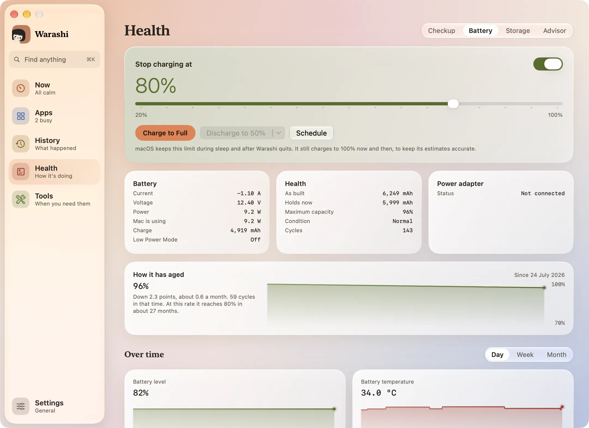
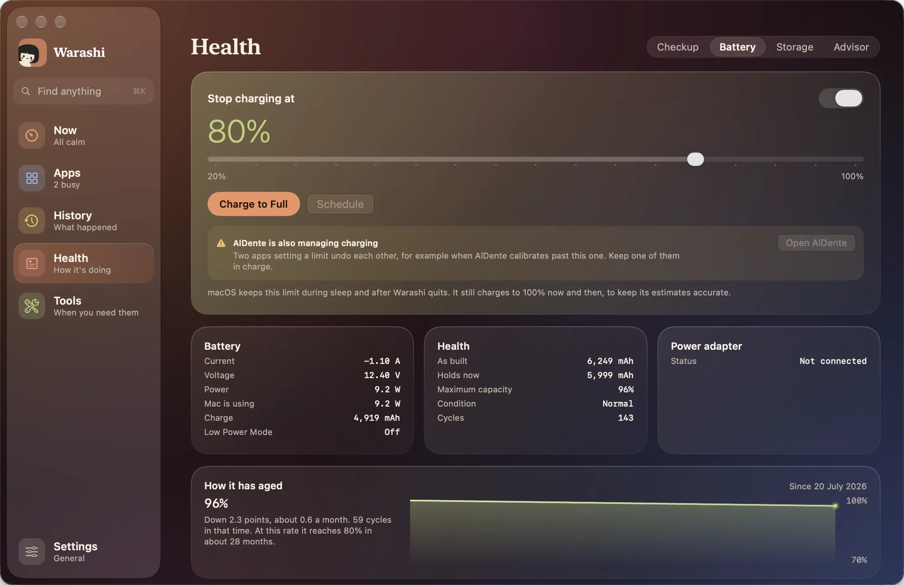

Baterai adalah tab di Kesehatan, pada Mac yang memiliki baterai. Tab ini menunjukkan kondisi baterai Anda dan memungkinkan Anda memilih di mana pengisian berhenti, sehingga baterai yang sebagian besar waktu tercolok tetap sehat lebih lama.


Hentikan pengisian di level yang Anda pilih
- Nyalakan
Nyalakan Hentikan pengisian di dan geser slidernya. Gerakannya berkelipatan 5%; 100% berarti tanpa batas. Baris di bawahnya menjelaskan apa yang terjadi: Menahan di 80%, Mengisi hingga 80%, Turun ke 80% atau Akan berhenti di 80% saat tercolok.
- Isi penuh, sekali ini saja
Sebelum bepergian seharian, tekan Isi Penuh. Mac Anda mengisi hingga 100% sekali ini saja, lalu batas berlaku kembali. Tindakan Isi di jendela bar menu dan takik melakukan hal yang sama.
- Atau habiskan
Tekan Kosongkan Baterai hingga 50% di sebelahnya, atau klik panahnya untuk memilih 80, 70, 60, 50, 40 atau 30%. Mac Anda berjalan dengan baterai sementara pengisi daya tetap terpasang, lalu pengisian berlanjut lagi, naik hingga batas Anda jika ada. Ini berguna sebelum Anda menyimpan Mac untuk beberapa lama. Baterai tidak perlu turun sampai batas Anda: macOS mengurusnya sendiri. Proses ini berhenti sendiri jika Anda mencabut kabel, Mac tidur atau menjadi panas, dan saat Warashi keluar. Fitur ini memerlukan Pembantu sistem, dan hanya muncul di Mac yang mampu melakukannya. Tombol bulat di samping petir di jendela bar menu memulainya pada level yang terakhir Anda pilih.
- Atau jadwalkan
Tekan Jadwalkan untuk memilih Isi penuh atau sebuah batas pada tanggal dan jam tertentu, misalnya besok pukul 07:00 sebelum Anda berangkat. Jika Mac Anda sedang tidur saat itu, jadwal dijalankan begitu Mac bangun.
Kontrol yang sama ada di Pemeriksaan, di Alat, dan, jika Anda menambahkannya, di jendela bar menu.
Mac mana, dan level mana
- Batas pengisian membutuhkan macOS 26.4 atau lebih baru pada Apple silicon. Warashi memakai batas yang sama dengan yang ditawarkan macOS sendiri, dari 80% sampai 100%.
- Batas di bawah 80%, hingga 20%, memerlukan macOS 26.7 atau lebih baru dan pembantu sistem. Di bawah 80%, Warashi memakai pengaturan yang tidak didokumentasikan Apple: Pengaturan Sistem mungkin menampilkan nilai yang tidak biasa, dan pembaruan macOS bisa membuatnya berhenti bekerja.
- macOS mempertahankan batas selagi Mac tidur dan setelah Warashi keluar. Ia tetap mengisi sampai 100% sesekali, agar perkiraannya tetap akurat.
Sisa halaman
Kartu untuk Baterai (isi daya, sisa waktu, suhu), Kesehatan-nya (kapasitas maksimum, siklus, kondisi), dan Adaptor daya Anda. Bagaimana baterai menua membuat grafik kapasitas maksimum sepanjang riwayat yang disimpan Warashi (hingga setahun), beserta berapa yang hilang, seberapa cepat, jumlah siklus dalam periode itu dan, pada laju tersebut, kira-kira kapan mencapai 80%, kapasitas yang dirancang Apple untuk dipertahankan baterai. Perlu riwayat dua minggu sebelum laju ditampilkan. Di bawahnya, Dari waktu ke waktu menampilkan grafik per hari, minggu, atau bulan: level baterai, suhu, daya, kapasitas maksimum dan siklus, serta app yang memakai daya terbanyak.
App lain yang mengatur pengisian
Jika AlDente atau app serupa berjalan saat batas Anda aktif, petak ini akan memberi tahu dan menawarkan untuk membukanya. Dua app yang menetapkan batas saling membatalkan: saat AlDente mengkalibrasi baterai, misalnya, baterai diisi hingga 100% melewati batas Anda. Biarkan hanya satu yang berkuasa. Apa yang terjadi terlihat di Log Penerbangan.
Jika ada yang tidak beres
- Kontrol bilang Mac ini tidak bisa mengatur batas: perbarui ke macOS 26.4 atau lebih baru.
- Penggeser mulai di 80%: batas yang lebih rendah membutuhkan macOS 26.7 atau lebih baru. Di 26.7 dan seterusnya, nyalakan Pembantu Sistem saat diminta.
- Melewati batas: macOS sesekali mengisi sampai 100% untuk kalibrasi ulang, atau Anda menekan Isi Penuh.
Selengkapnya di Pemecahan Masalah, atau kirim email ke adam@warashi.app.